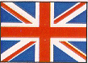
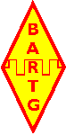

A Brief Biography of
Alan Hobbs — G8GOJ
Alan developed his lifelong passion for electro-mechanical teleprinters at a very early age due to spending much of his school holidays in “Telegraph House”, the main factory of Creed & Co at East Croydon, from the early 1950s to the early 1960s.
This was because his father was the Plant Engineer for Creed & Co, and was responsible for the maintenance of the site facilities and the machine tools which produced the teleprinters.
His first teleprinter, a Creed model 47C/N4 tape printing teleprinter, was acquired in 1962, together with an aging Creed model 6S/2 punched tape reader and a copious supply of scrap punched tape from the test benches in the main assembly shop. Many happy hours were spent printing out whatever tape could be obtained.
Within a few years, a National HRO communications receiver had been purchased from a friend at Technical College, a Government surplus GCRE FS/10 terminal unit had been purchased from a dealer in North London, and a Creed model 7TR/B/2 reperforator had been purchased from a dealer in Central London.
With help from G2FUD of the British Amateur Radio Teleprinter Group (BARTG), the FS/10 was suitably converted, and the 47C/N4 was connected to the HRO.
This opened up the world of RTTY news agencies to Alan, leading to the bedroom floor being covered with 3/8” wide paper tape after an evening “On the Air”.
In due course, the desire to talk back became overwhelming, and the Amateur Radio callsign G8GOJ was obtained in August 1972.
Alan eventually joined the committee of BARTG in the late 1970s.
He is a past Chairman of BARTG, with the “T” of BARTG subsequently changed to “Teledata”, and is currently BARTG President.
Equipment in use includes: several Creed model 6S/5 and 6S/6 punched tape readers, the Creed model 7TR/B/2 reperforator mentioned above, two Creed model 75 page printing teleprinters, a Creed model 444 page printing teleprinter, and a Siemens T100 page printing teleprinter.
Alan has written many articles pertaining to machines, coding, and RTTY in Britain. Selected articles by Alan Hobbs are presented here on RTTY.COM: